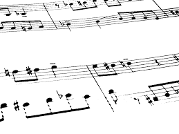

Alguns autores defendem que música é a combinação de sons e silêncios de uma maneira organizada. Vamos explicar com um exemplo: Um ruído de rádio emite sons, mas não de uma forma organizada, por isso não é classificado como música. Essa definição parece simples e completa, mas definir música não é algo tão óbvio assim. Podemos classificar um alarme de carro como música? Ele emite sons e silêncios de
uma maneira organizada, mas garanto que a maioria das pessoas não chamaria esse som de música.
O que é música, afinal?
De uma maneira mais didática e abrangente, a música é composta por melodia, harmonia e ritmo:
 Fig1- Paritura, a escrita da música completa
Melodia é a voz principal do som, é aquilo que pode ser cantado.
Harmonia é uma sobreposição de notas que servem de base para a melodia. Por exemplo, uma pessoa tocando violão e cantando está fazendo harmonia com os acordes no violão e melodia com a voz. Cada acorde é
uma sobreposição de várias notas, como veremos adiante em outros tópicos. Por isso que os acordes fazem parte da harmonia.
Ritmo é a marcação do tempo de uma música. Assim como o relógio marca as horas, o ritmo nos diz como acompanhar a música.